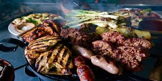

Churrasco
Imagina el delicioso aroma de un churrasco recién hecho, ¿no es tentador?
Sumérgete en la riqueza culinaria de Guatemala con nuestro Churrasco Guatemalteco al Estilo Tradicional. Inspirado en las tradiciones culinarias de nuestra tierra, este plato emblemático ofrece una experiencia gastronómica auténtica y reconfortante.
Preparamos nuestro churrasco con cortes selectos de carne de res, sazonados con nuestras especias guatemaltecas exclusivas y asados a la parrilla para lograr un sabor único y jugoso. Acompañado de deliciosas guarniciones típicas como arroz, frijoles, plátanos fritos y nuestras salsas caseras, cada bocado te transportará a los sabores y aromas de Guatemala.
Ya sea que estés celebrando una ocasión especial o simplemente quieras disfrutar de una comida reconfortante, nuestro Churrasco Guatemalteco al Estilo Tradicional es la elección perfecta. ¡Ven y déjanos llevarte en un viaje culinario por las maravillas de Guatemala con cada delicioso bocado!
esta dispoible por tan solo Q45.00
